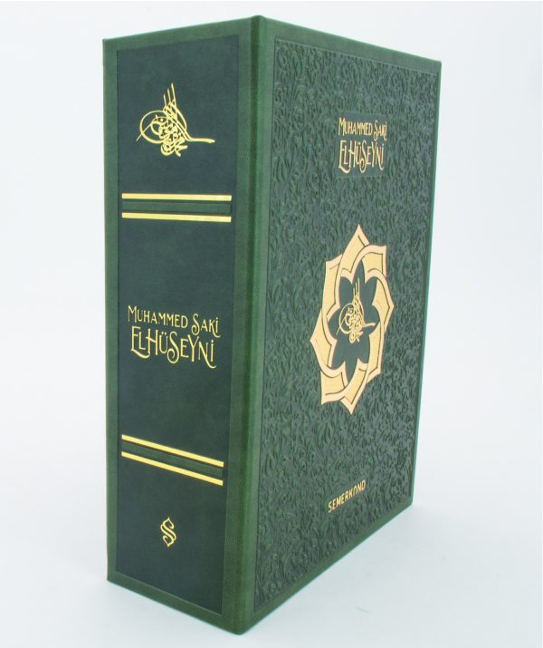

01جلد طبيعي
أغلفة كاملة من جلد العجل بنقش بارز عميق وتذهيب ساخن وحواف مذهّبة، للطبعات الرئيسية وطبعات الاقتناء.
أغلفة جلدية وصناديق تقديم للأعمال الكاملة والطبعات الخاصة وطبعات طبق الأصل، تُنتج لدور النشر منذ 1978 وتُشحن إلى جميع أنحاء العالم.
غونالب دار تجليد من الجيل الثاني في إسطنبول تعمل حصريًا مع دور النشر والمؤسسات. إن كانت قائمة إصداراتكم تضم طبعاتٍ صُنعت لتبقى، من أعمال كاملة وطبعات تذكارية وطبعات لهواة الاقتناء، فنحن ننتج الأغلفة والصناديق التي تستحقها، بالجملة ووفق برنامجكم.
مطبعتكم تطبع كتلة الكتاب؛ ونحن نصنع الغلاف. أما تركيب الغلاف على الكتلة المطبوعة فيبقى لدى مطبعتكم أو مجلّدكم. المحاذاة واللون ومواعيد التسليم تُضبط ضمن الحدود التي يتطلبها برنامج أي ناشر. ولطبعات المصاحف والكتب الدينية، تفضّلوا بزيارة صفحة تجليد المصاحف.
أغلفة كاملة من جلد العجل بنقش بارز عميق وتذهيب ساخن وحواف مذهّبة، للطبعات الرئيسية وطبعات الاقتناء.

الخيار الاقتصادي للسلاسل الدينية والكلاسيكية الكبيرة، بالكليشيهات نفسها ومعيار المحاذاة نفسه.

كعب من الجلد الطبيعي مع أغلفة من قماش التجليد؛ التوازن الكلاسيكي بين المتانة والتكلفة للأعمال الكاملة.

المقاسات المتدرجة والأطقم المتعددة المجلدات والطبعات المتكررة تغادر طاولاتنا على معيار واحد في المحاذاة واللون؛ فآخر نسخة في الطبعة تطابق أولها. وكذلك العلب الواقية والصناديق الصدفية والصناديق بهيئة كتاب التي تحملها.
تُفحص كل نسخة بالعين قبل التغليف.
شاهد حرفتنا
لناشري طبعات طبق الأصل نعيد إنتاج التجليدات الكلاسيكية بمفرداتها الأصلية: أرضيات منقوشة صمّاء، تذهيب ساخن متعدد الدرجات في محاذاة تامة، وتكوينات الشمسة والأطر.
من أعمالنا في هذا الباب إنتاجٌ لمؤسسة المخطوطات التركية (Yazma Eserler).
شاهد أعمال طبق الأصلأنتجنا لكبرى دور النشر الدينية والتراثية في تركيا على مدى أربعة عقود.
 سمرقند للنشر (Semerkand)
سمرقند للنشر (Semerkand) خيرات للنشر (Hayrat)
خيرات للنشر (Hayrat) أركام للنشر (Erkam)
أركام للنشر (Erkam) أنوار للنشر (Envar، وقف الخدمة)
أنوار للنشر (Envar، وقف الخدمة) سرهند للنشر (Serhend)
سرهند للنشر (Serhend) أوتوكن للنشر (Ötüken)
أوتوكن للنشر (Ötüken) مؤسسة المخطوطات التركية (Yazma Eserler)
مؤسسة المخطوطات التركية (Yazma Eserler)عينات جلد وغلاف منقوش وصندوق مصغّر، على مكتبكم عبر DHL.
عرض واضح حسب المقاس والكمية؛ ثم الكليشيهات ونموذج أولي لموافقتكم.
كبس يدوي وصناعة أغلفة وصناديق، وفق معيار محاذاة واحد.
تُفحص كل نسخة بالعين قبل التغليف.
تغليف بمواصفات التصدير؛ التسليم إلى بابكم أو مطبعتكم مباشرة.
يرد فريقنا خلال يوم عمل واحد.